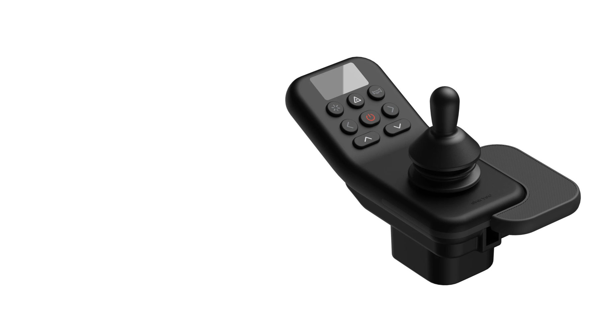
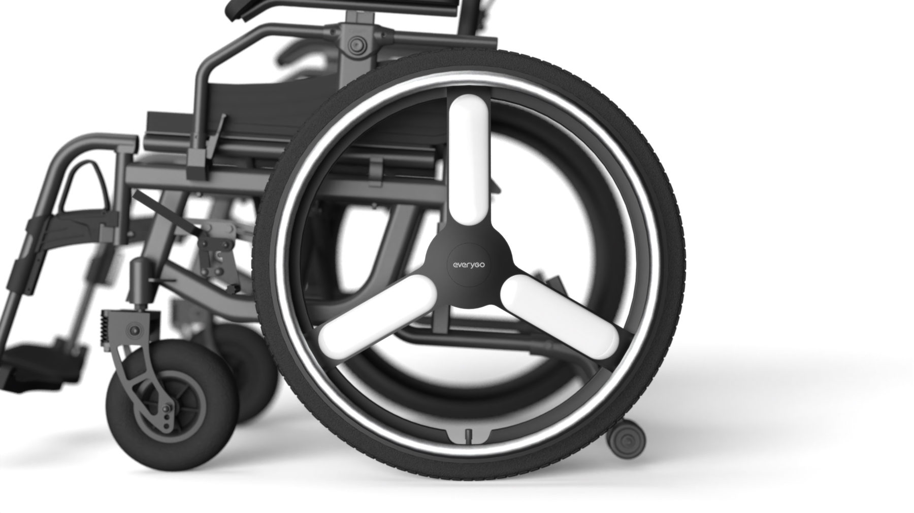
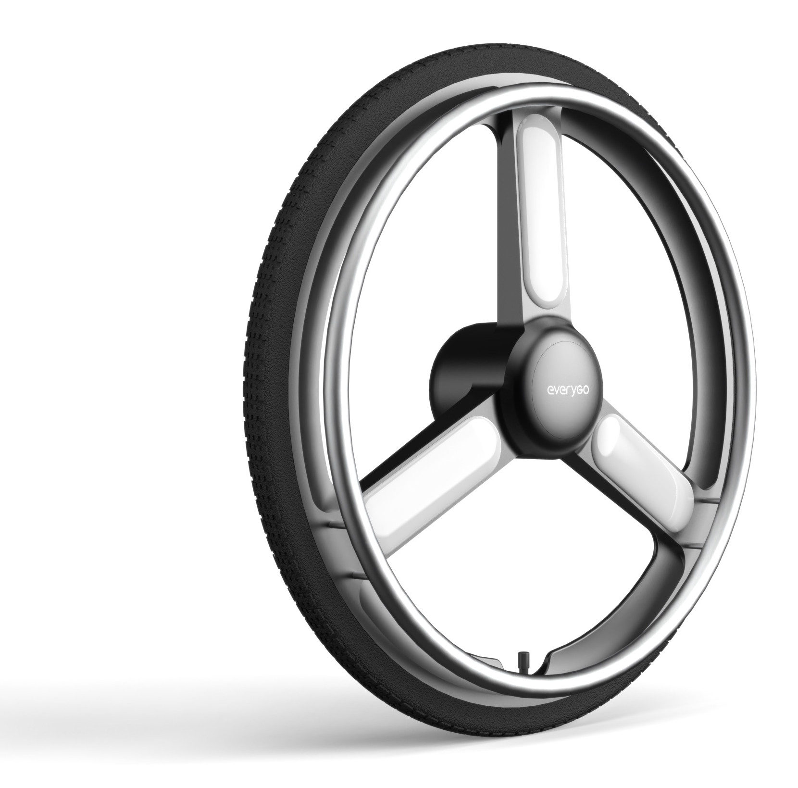

2025 — 2026Wheelchair · Everybot Mobility
H500
수전동휠체어 H500의 컨트롤러와 인휠모터 휠을 디자인했습니다. 손 힘이 약한 사용자도 정확하게 조작할 수 있는 컨트롤러와, 구동부를 허브에 담고 컬러 커스텀을 고려한 휠입니다.

01
Controller
Controller
손을 받친 채 쓰는 컨트롤러
손 힘이 약한 사용자도 놓치지 않고 정확하게 조작할 수 있도록, 손을 받친 채 쓰는 컨트롤러를 디자인했습니다.


01
Joystick & Palm Rest
벨로즈로 감싼 조이스틱 옆 텍스처 팜레스트로 손을 받친 채 조작
02
Button Grouping
레드 전원 버튼을 중앙에, 방향 버튼을 주위에 모아 기능별로 묶음
03
Display
표시부를 버튼 위에 두어 누르는 손에 가려지지 않게 함
04
Mock-up
3D 프린팅 목업으로 직접 쥐고 조작하며 형상과 배치를 다듬음
Final Design
레드 전원 버튼을 중심으로 라이트·비상등·경적 버튼을 배치하고, 측면에 벨로즈 조이스틱과 팜레스트를 두었습니다.


Role
컨트롤러 디자인UX 디자인 (조작 형상·버튼 배치·오조작 방지·표시부 가독성)3D 프린팅 목업 검증
02
In-wheel Motor Wheel
Wheel
휠 하나로 완결한 구동부
인휠모터를 허브에 담아 휠 하나로 구동부를 완결했습니다. 원하는 컬러로 커스텀할 수 있도록 확장성을 고려해 디자인했습니다.


Hub
인휠모터 허브
인휠모터를 허브에 담아 휠 하나로 구동부를 완결
Spoke
3-스포크 · 컬러 커스텀
스포크 인서트를 원하는 컬러로 커스텀할 수 있도록 확장성을 고려한 디자인
Hand Rim
메탈 핸드림
손으로 수동 주행할 때를 고려해 핸드림의 두께와 휠과의 간격을 설정

Mock-up & CMF
스포크 커버 컬러와 핸드림 마감을 실물 목업과 컬러칩으로 비교했습니다.


Role
인휠모터 휠 디자인3D 모델링CMF